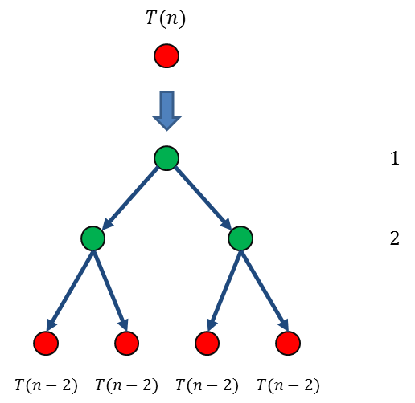

3.4.2. 经典递归问题：Hanoi塔游戏¶
法国数学家爱德华·卢卡斯曾编写过一个印度的古老传说：在世界中心贝拿勒斯（在印度北部）的圣庙里，一块黄铜板上插着三根宝石针。印度教的主神梵天在创造世界的时候，在其中一根针上从下到上地穿好了由大到小的64片金片，这就是所谓的Hanoi塔（汉诺塔）。不论白天黑夜，总有一个僧侣在按照下面的法则移动这些金片：一次只移动一片，不管在哪根针上，小片必须在大片的上面。僧侣们预言，当所有的金片都从梵天穿好的那根针上移到另外一根针上时，世界就将在一声霹雳中消灭，而梵塔、庙宇和众生也都将同归于尽。下面就是一个根据这个传说制作的层数较少的Hanoi塔玩具：

为什么制作玩具的时候塔的层数总是要减少，而不是沿用传说中的64层呢？我们可以尝试一下怎样搬移这些金片，计算一下完成64片金片的搬移最少需要多少次移动。这里需要用到递归方法来求解。
让我们把三根针依次编号为1号、2号和3号针，目标是把 \(n\) 片金片从1号针按规则搬移到3号针上去，金片从小到大依次编号，最顶上的最小一片为1号金片，其次的为2号金片，依此类推最下面的最大金片为 \(n\) 号金片。例如 \(n=6\) 时，初始状态如下图所示：

设 \(T(n)\) 为完成一次 \(n\) 层Hanoi塔最少需要移动的次数。显然当 \(n=1\) 时，只要直接把这片金片移动过去就可以了，\(T(1)=1\)。
当 \(n=2\) 时，搬移的方法也很简单，先把1号金片移动到2号针上，然后把2号金片移动到3号针上，最后把2号针上的1号金片移到3号针上去就完成了，总共需要3步，\(T(2)=3\)。

接下来我们可以这样来考虑，对于更大的金片数量 \(n\gt2\)，先把上面的一叠 \(n-1\) 片金片“整体地”搬移到2号针上，然后把最底下的 \(n\) 号金片移动到3号针上，最后把2号针上这一叠 \(n-1\) 片金片再整体地搬移到3号针上去，任务就完成了。

注解
之所以可以这样递归地搬移，主要基于以下两个事实：
1、一定可以整体搬移任意高度的一叠金片，否则就意味着Hanoi塔变成一个无解的问题了。既然规模为 \(n\) 的整个问题可解，那么规模为 \(n-1\) 的部分问题就一定有解，因为它们有相同的解法，只是规模小1。
2、在整体搬移 \(n-1\) 片金片时，剩下的那片 \(n\) 号金片既不会被移动，也不会影响其他金片的移动。即对于整体搬移上面的 \(n-1\) 片金片这一子问题而言，\(n\) 号金片可以视为不存在。
这样我们就设计出了一个可行的递归搬移算法，算法的递归终止条件为金片数等于1，但是在实际编程的时候，为了让代码更简洁，往往会用金片数等于0作为终止条件。这样一个程序将会非常地优雅简洁：
#include <cstdio>
// Hanoi递归算法的递归函数，从 from 号针搬到 to 号针，金片数量为 n
void hanoi(int from, int to, int n) // 针采用1、2、3来编号，故辅助针编号为 (6 - from - to)
{
if (n) { // 如果 n == 0 就什么都不做直接返回
hanoi(from, 6 - from - to, n - 1); // n == 1 时的递归调用会直接返回
printf("move disk %d from needle %d to %d\n", n, from, to); // 移动最底一片
hanoi(6 - from - to, to, n - 1);
}
}
int main()
{
int n;
scanf("%d", &n);
hanoi(1, 3, n);
return 0;
}
注解
注意，在算法运行过程中，辅助针并不一定是2号针，它是随着步骤的变化而是不断变化的。所以不能在程序里面写死是2号，而应该根据实际情况来计算出来当前步骤时辅助针是哪一根。有些教材上也会把辅助针作为一个参数传递过去，这样就适合某些用名称或字母来命名针的情况，例如：
void hanoi(char from, char to, char aux, int n) // aux 是辅助针的字母编号
{
if (n) {
hanoi(from, aux, to, n-1);
// 移动 from 针的第n片金片到 to 针
hanoi(aux, to, from, n-1);
}
}
大家可以运行一下上面这个程序，输入要搬移的金片数量，感受一下随着金片数量的增加，程序运行的时间长短。
警告
如果你想尝试30片以上的金片，最好先插上笔记本电脑的充电器，然后去看会儿电视或者睡一觉，第二天再去看有没有运行完。
随着金片数量的增加，程序运行的时间以极快的速度激增，所以让我们来精确地计算一下 \(T(n)\) 吧。
要搬移 \(n\) 片金片，按照递归算法，和把大象塞进冰箱一样，一共分三步：
把上面的 \(n-1\) 片金片用同样的方法搬到辅助针上（把冰箱门打开），这一步需要移动的步数是 \(T(n-1)\) 次；
把最底下的 \(n\) 号金片移动到目标针上（把大象放进冰箱），这一步需要移动 \(1\) 次；
把第1步时搬到辅助针上的 \(n-1\) 片金片再用同样的方法搬到目标针上（关上冰箱门），这一步也需移动 \(T(n-1)\) 次。
所以整个步骤一共移动的次数是：\(T(n)=2T(n-1)+1\) 次，其中 \(T(1)=1\)。这种公式叫做递推公式，怎么计算呢？有两种方法：迭代法和递归树。
3.4.2.1. 递推公式、迭代法和递归树¶
递推公式是用来计算数列中各项值的一种公式，如果一个数列的第 \(n\) 项 \(a_n\) 与该数列的其他一项或多项之间存在对应关系的，这个关系就称为该数列的递推公式。递推公式必须同时提供初始项的值（称为“初值”）才能真正地计算出各项的值。
递推公式和递归算法紧密联系在一起，一般一个递归算法的工作量（工作量的量级就是算法的时间复杂度） \(T(n)\) 常常以递推公式的形式出现，而公式的初值就对应着算法的递归终止条件，正如Hanoi塔的例子所示。
迭代法
迭代法就是不断地用下一步递推的表达式来代入上一步递推的公式中，直到抵达初值为止，然后利用常见的数列求和公式来求出 \(T(n)\) 的表达式。每一步这样的代入就称为一次迭代。
以Hanoi塔算法的递推公式为例：
第一步迭代，要代入替换 \(T(n-1)\) 项。
根据递推公式 \(T(n)=2T(n-1)+1\)，容易推知 \(T(n-1)=2T(n-2)+1\)，我们就把这个公式代入到 \(T(n)\) 的公式里去得到：
\[\begin{split}\begin{align} T(n)&=2T(n-1)+1\\ &=2[2T(n-2)+1]+1=2^2T(n-2)+2+1 \end{align}\end{split}\]
第二步迭代，方法和上一次一样，现在进一步迭代掉 \(T(n-2)\) 这一项：
\[\begin{split}\begin{align} T(n)&=2^2T(n-2)+2+1\\ &=2^2[2T(n-3)+1]+2+1=2^3T(n-3)+2^2+2+1 \end{align}\end{split}\]
如此不断迭代下去，直到迭代到等号右边的项抵达了初值 \(T(1)=1\) 为止：
\[\begin{split}\begin{align} T(n)&=2^3T(n-3)+2^2+2+1\\ &=2^3[2T(n-4)+1]+2^2+2+1=2^4T(n-4)+2^3+2^2+2+1\\ &=\cdots\\ &=2^{n-1}T(1)+2^{n-2}+\cdots+2^2+2+1=2^{n-1}+2^{n-2}+\cdots+2^2+2+1\\ &=2^n-1 \end{align}\end{split}\]
这样我们就用迭代法计算出了Hanoi塔递归算法的总工作量：搬移 \(n\) 片金片需要总共移动 \(T(n)=2^n-1\) 次金片。
那么传说中的64片金片需要移动多少次呢？我们可以计算一下：
这个数字也正是C++语言unsigned long long数据类型能够表示的最大数，也是C++原生数据类型中能表示的最大整数，如果在程序中会涉及比它更大的整数，那么就需要自己编写高精度整数算法了。
假如神庙里的那位婆罗门能像电脑一样分毫不差而且毫不犹豫地每秒钟移动一片金片，共需多长时间呢？经过计算，\(2^{64}-1\) 秒大约为5845.42亿年，宇宙从大爆炸中诞生到现在也不过138亿年。看来不管传说是不是真的，至少有一点肯定说对了，等64片金片搬完，宇宙一定灰飞烟灭了。
递归树
递归树是迭代的图形表示，是迭代计算的树状模型。递归树的生成过程与迭代过程是一致的，从最初的树根 \(T(n)\) 开始，每迭代一次，树就向下“生长”一层。树上的每一个节点都带有一个数值项，所有的项恰好是迭代时产生的和式中的项。把树上所有节点的项求和就得到了递推方程的解。
有些递推公式形式比较复杂，直接迭代比较麻烦，用递归树反而可以比较清楚直观地完成迭代计算。
我们先把递推公式的形式一般化为：
注解
比如Hanoi塔的递推公式，其实就是 \(s=2,n_1=n_2=n-1;t=1,f_1(n)=1;T_0=1\) 的情况。
这种把各种各样的具体公式抽象为一个一般形式，然后从一般形式中具体化出一个具体公式的过程可能比较难理解，请大家仔细想一想。
上面这个一般形式的递推公式中，我们称 \(T(n_1),\dots,T(n_s)\) 这些项为函数项，它们会对应递归树上的节点。最初的树就只有一个树根节点 \(T(n)\)：
{kind=link}
当一个节点还是一个函数项节点时，它是没有数值项的。
迭代时，我们把当前树上所有的函数项节点进行替换。首先让它向下生长出一层新的子树，也就是它迭代产生的新函数项 \(T(n_1),\dots,T(n_s)\)，然后将它自身替换为一个数值项节点，就是公式中除了函数项以外的部分 \(f_1(n)+\cdots+f_t(n)\)：
{kind=link}
如果生成出来的子节点还没有达到初值，那就继续按这样的方法替换，如此逐步迭代，层层替换，直到所有叶子节点都成为函数初值节点，初值节点的项值就是函数初值。
下面我们做一下Hanoi塔算法的递归树。递推公式为 \(T(n)=2T(n-1)+1\)，初值为 \(T(1)=1\)，函数项一共有两个，都是 \(T(n-1)\)。所以树的每一次生长，原函数项节点就会分裂出两个一模一样的子节点来，子节点的规模减1，直到规模减到1。
首先从根节点 \(T(n)\) 开始，进行第一次迭代生长，这时的数值项就是一个 \(1\)，我们把每一层的数值项写在图的最右边，层层对齐。第一次生长的过程如下图：
{kind=link}
然后用相同的方法进行第二次迭代生长，替换掉新生出来的两个叶子节点 \(T(n-1)\)。因为每一个叶子节点对应的函数项为 \(T(n-1)=2T(n-2)+1\)，所以替换后又会各自生出两个叶子结点 \(T(n-2)\)，总共 \(2^2=4\) 个。同时自身被替换成数值项后，其值都是 \(1\)：
{kind=link}
依此类推，直到第 \(n-1\) 次生长的时候，所有新长出来的节点都抵达初值 \(T(1)=1\)，一共有 \(2^{n-1}\) 个，它们的值都是 \(1\)：
{kind=link}
递归树生长完毕之后，只要把右边所列的每一层的数值项之和全部加起来，就是递推公式的解。在这里我们可以看到，经过 \(n-1\) 次迭代生长之后，Hanoi塔算法的递归树全部归为数值项和初值项。每次生长增加一层，\(n-1\) 次生长使得树的总高度增加到 \(n\) 层（最初有一层树根不要忘记）。如果记树根为第0层的话，那么第 \(i\) 层上的项值之和为 \(2^i\)，构成了一个首项为1，公比为2的等比数列。因此利用等比数列求和公式可以算出（以2为公比的等比数列求和公式应该是每一个学习算法的人都必须牢记于心的），Hanoi塔算法的总工作量为：
结果和迭代法得到的结果一致。
迭代法和递归树，是同一种运算方法的两种不同形式。迭代法纯用代数运算，递归树利用图形化工具，理论上能用其中一种方法计算的，一定也能用另一种方法计算。在实际应用中，对于一般常见的递推公式，使用迭代法就足够了。但是有些复杂的公式，分支很多，尤其是如果沿不同的分支迭代次数（抵达初值的迭代次数）不同的话，纯代数运算不够直观，容易出错，甚至很难算出来。这种情况下使用递归树往往能更好地解决问题。
实际应用中，对递归算法的分析往往更偏爱于使用递归树，因为图形化的表示方法更加直观，更容易让人快速掌握到递归过程的全貌。